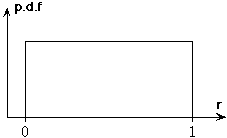
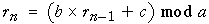
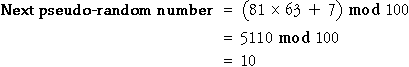
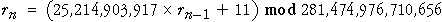

Random numbers between 0 and 1
Most simulations are based on a pseudo-random number generator that provides a sequence of values that are (almost) indistinguishable from independent values sampled from a rectangular distribution between 0 and 1.

Congruential generators
A congruential pseudo-random number generator is usually the basis. It generates a sequence of integers between 0 and a with a formula of the form

where a, b and c are constants and the 'mod' operator means the remainder after the quantity on its left is divided by a. The algorithm is most easily explained with an example. If a = 100, b = 45 and c = 12 and we start with the 'seed' value r = 63 then the next pseudo-random number will be
10">
Repeating the algorithm from 10 gives the next pseudo-random number 17, etc.
We require pseudo-random values between 0 and 1, so the above values are divided by a, giving the sequence of values 0.63, 0.10, 0.17, ... The diagram below illustrates the algorithm.
Click Next Value a few times to generate several pseudo-random numbers.
The jittered dot plot on the right shows the distribution of the pseudo-random numbers that have been generated. If you generate 100 pseudo-random numbers, each value from 0.00, 0.01,..., 0.99 appears exactly once, after which the sequence repeats.
Select Time Series from the pop-up menu under the display and generate a few more pseudo-random numbers. Although you probably did not see a noticeable pattern in the sequence of pseudo-random numbers as they appeared in the jittered dot plot, a pattern is evident when you see a long enough sequence of values. Other choices of b and c (with a = 100) result in more obvious patterns.
Increasing a (and therefore generating pseudo-random numbers with 3 or more digits) reduces the problem. Select Three digits or Four digits from the popup menu and generate some more pseudo-random numbers. Observe that there is no discernable pattern in the pseudo-random numbers when larger integers are used.
In practice, very large values of the constants a and b are used. For example, the congruential pseudo-random number generator that is built into the Java programming language is

With a pseudo-random number generator like this, successive pseudo-random numbers are (for practical purposes) independent and uniformly distributed between 0 and 1.
(The choice of values for a and b is extremely important -- you cannot just choose any large values for these constants.)